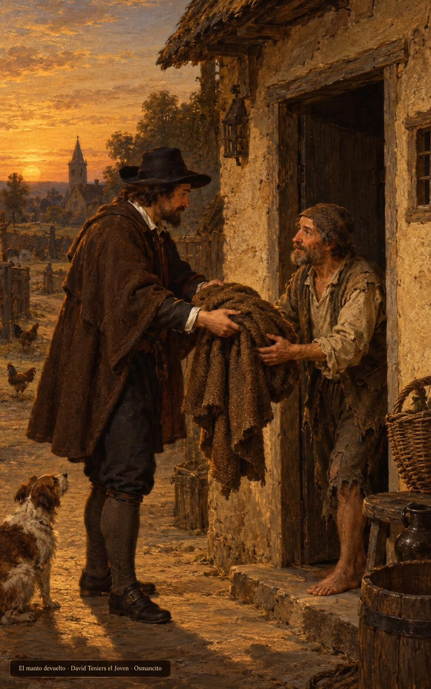
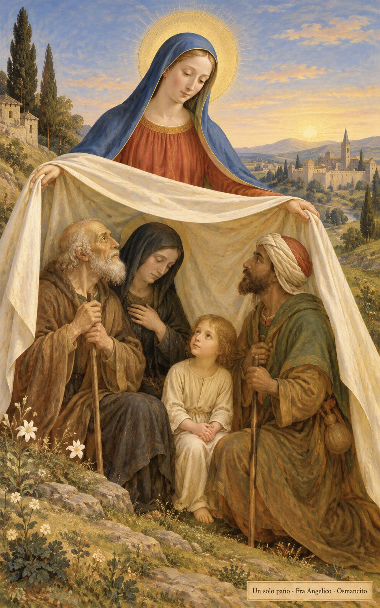

25 de octubre de 2026
¡Buenos días!
El manto antes del sol
15
Si tomas en prenda el manto de tu prójimo, devuélveselo antes de que se ponga el sol, porque no tiene otra cosa con qué cubrirse.
Éxodo 22,26. Fuente
Que el amor a Dios no se nos quede en el techo del templo: baje a la puerta donde el extranjero espera y la viuda cuenta sus monedas. Que devolvamos el manto antes de que se ponga el sol, porque nadie duerme bajo nuestra deuda. Que amemos al prójimo como a nosotros mismos, no desde lejos, sino con las manos, y que en esos dos amores, que son uno, se sostenga nuestra manera de vivir.

- Al ponerse el sol, el prestamista devuelve el manto en el umbral de la casa humilde: Éxodo 22 pide que nadie duerma sin su cobertor.

- Quien extiende el manto cubre con un mismo paño al anciano, a la viuda, al niño y al caminante extranjero: los dos amores son una sola cobija.
¡Feliz domingo 25 de octubre!
😊🙋♂
© 2026 Osmancito